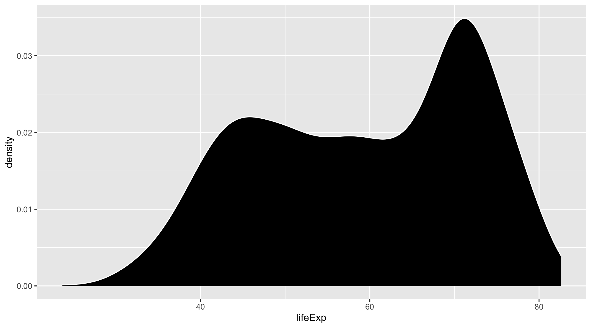
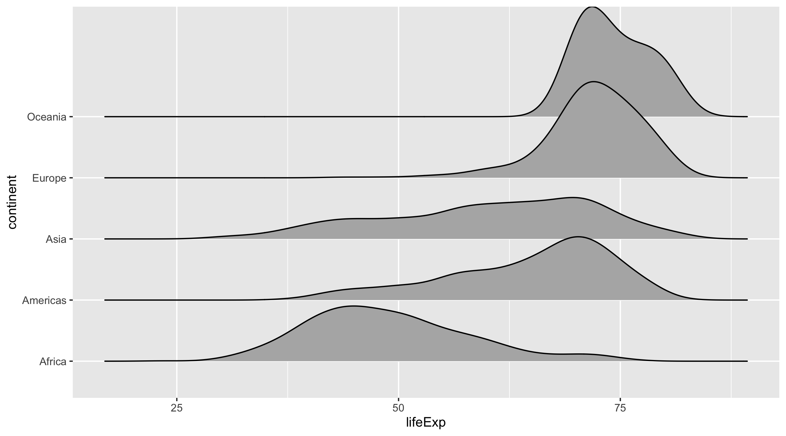

library(tidyverse)
library(juanr)
library(gapminder)Distributions
Load libraries:
One distribution
Histogram
The histogram puts observations in bins, and then draws bars that are as tall as the number of observations that fit in each bin.
ggplot(gapminder, aes(x = lifeExp)) + geom_histogram()You can change the bins:
ggplot(gapminder, aes(x = lifeExp)) + geom_histogram(bins = 10)Histograms look nicer when you color the borders “white”:
ggplot(gapminder, aes(x = lifeExp)) + geom_histogram(color = "white")Density graph
Density graph groups observations in a sort of “smoothed” bin, and makes the height of the graph as tall as the proportion of observations that fall in that “smoothed” bin:
ggplot(gapminder, aes(x = lifeExp)) + geom_density(color = "white", fill = "black")When it goes wrong
To draw distributions it’s gotta be a continuous variable, ideally one that takes on many values and is not so lumpy. For instance, the variable below only takes on 10 values and looks bad:
ggplot(race, aes(x = colorr)) + geom_density(color = "white", fill = "black")
This distribution would look better if we manually counted the number of observations per value and made a barplot like so:
color_ct = race |>
group_by(colorr) |>
tally()
color_ct# A tibble: 12 × 2
colorr n
<hvn_lbll> <int>
1 1 247
2 2 605
3 3 1351
4 4 1702
5 5 1576
6 6 1052
7 7 600
8 8 270
9 9 106
10 10 34
11 11 12
12 NA 2Plot:
# gotta wrap colorr in factor, otherwise ggplot thinks its just a number
ggplot(color_ct, aes(y = factor(colorr), x = n)) + geom_col()
Multiple distributions
We can map variables to the fill aesthetic to draw separate distributions.
ggplot(gapminder, aes(x = lifeExp, fill = continent)) +
geom_density(color = "white")In this case, it is nice to make the distributions more transparent so they’re easier to see. alpha controls opacity (0 to 1):
ggplot(gapminder, aes(x = lifeExp, fill = continent)) +
geom_density(color = "white", alpha = .6)Notice that the difference between histogram (where height ~ counts) and density (where height ~ proportion) when we plot multiple distributions. In the histogram you can see that there’s very few observations from Oceania, which you cannot see in the density graph. But the differences in the shapes of the distributions are clearer in the density graph than the histogram.
ggplot(gapminder, aes(x = lifeExp, fill = continent)) +
geom_histogram(color = "white", alpha = .6)The boxplot essentially reports summary statistics of the distribution for each group:
ggplot(gapminder, aes(x = lifeExp, y = continent)) +
geom_boxplot()One downside is you can’t see the shape of the distribution. Violin plots show you this:
ggplot(gapminder, aes(x = lifeExp, y = continent)) +
geom_violin()Sometimes people overlay them:
ggplot(gapminder, aes(x = lifeExp, y = continent)) +
geom_violin() + geom_boxplot()A different approach is a ridge plot, which stacks the distributions so differences are made clearer:
library(ggridges)
ggplot(gapminder, aes(x = lifeExp, y = continent)) + geom_density_ridges()Problem with any of these is that we can’t see how many observations are in each group. Reader might incorrectly assume similar group sizes.
One approach is to plot the points, but jittered (randomly moved). width controls the level of “jittering”. :
ggplot(gapminder, aes(x = lifeExp, y = continent)) +
geom_point() + geom_jitter(width = 2)
A nicer approach is the “beeswarm” plot:
library(ggbeeswarm)
ggplot(gapminder, aes(x = lifeExp, y = continent)) + geom_quasirandom()A kinda mix between this and the boxplot is the raincloud plot. Gives you distribution + number of observations + some summary stats:
library(ggdist)
ggplot(gapminder, aes(x = lifeExp, y = continent)) +
stat_halfeye() +
stat_dots(side = "left")Nicer version from here
library(ggdist)
ggplot(gapminder, aes(x = lifeExp, y = continent, fill = continent,
color = continent)) +
stat_halfeye(
# adjust bandwidth
adjust = 0.5,
# move to the right
justification = -0.2,
# remove the slub interval
.width = 0,
point_colour = NA
) +
geom_boxplot(
width = 0.12,
# removing outliers
outlier.color = NA,
alpha = 0.5
) +
stat_dots(
# ploting on left side
side = "left",
# adjusting position
justification = 1.1,
# adjust grouping (binning) of observations
binwidth = 0.25
) +
theme_light()